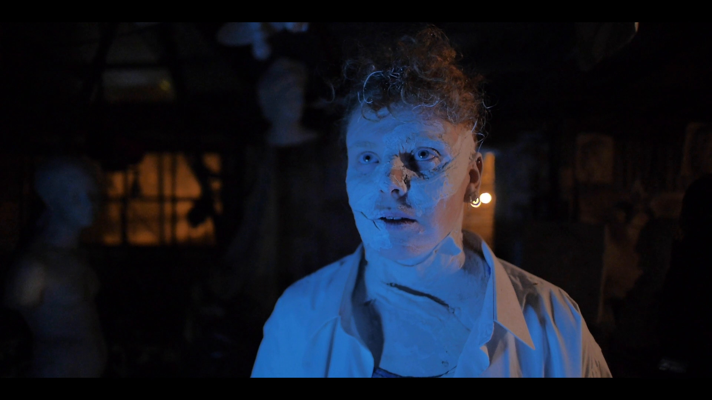
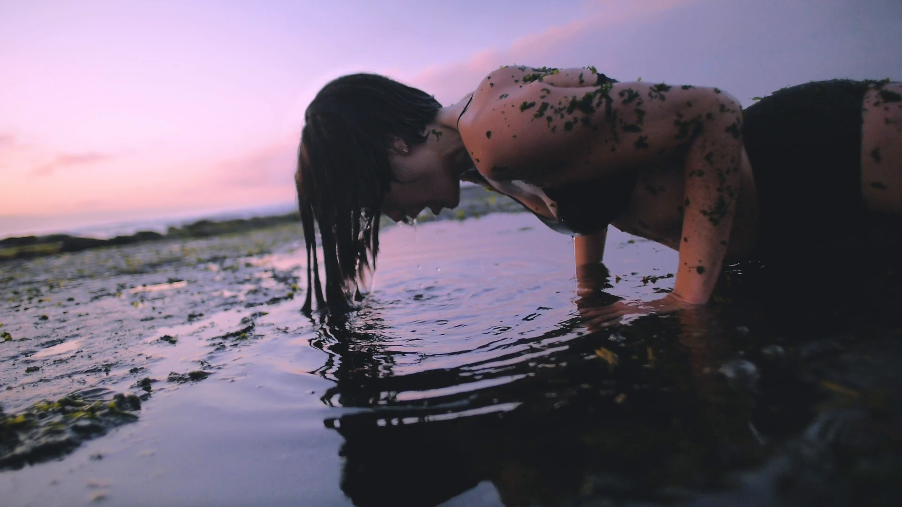
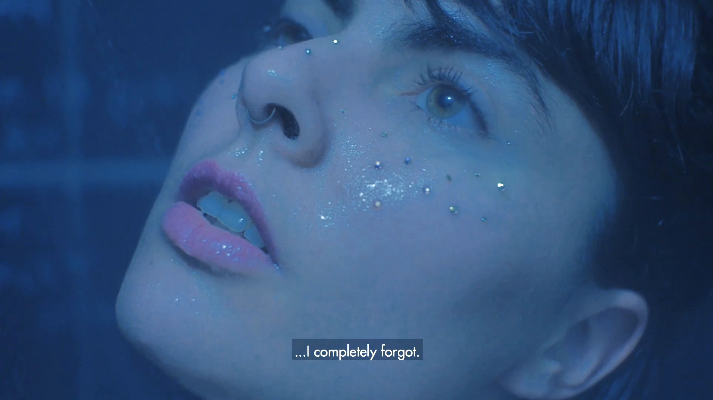
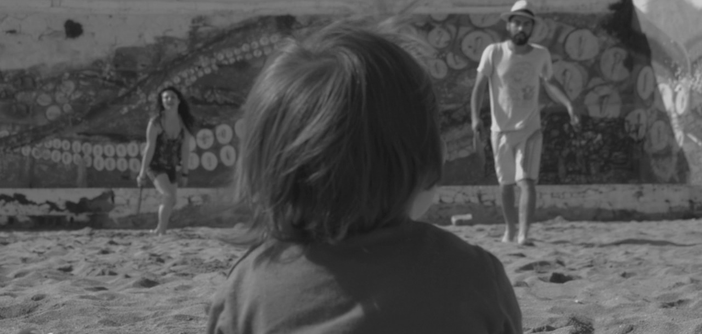
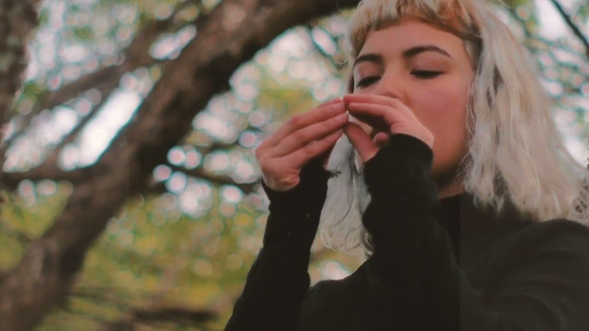

TeaserMedusa of Stone
Medusa de piedra
As usual, Marie enjoys her game of violence when she sculpts figures of men who embody mythological gods, until one day she senses a powerful presence in her workshop. That sleepless night, she begins the project that will obsess her: a sculpture of Medusa’s head. As she progresses, the transformation gestates within her, sculpting a new being from the depths.
Co production Chile — France
Status: Filmed entirely. Now in development of post-production: Writing and recording of voice-over, sound effects, soundtrack, editing, and color grading.
- Production
- A dEUSeXmACHINAfilms production
- Executive producer
- Felipe Díaz Galarce
- Producers, Scripts
- Louise Hermann, Blanche Brunel, Felipe Díaz Galarce.
- Cast
- Blanche Brunel
- Director, DOP & Edit
- Felipe Díaz Galarce

TrailerHelix Evolution
Evolución Helix
On this beach in the South Pacific there is a platform of fossil sediments from more than 70 million years ago, when dinosaurs still lived there.
Among the animals that survived the meteorite are some birds and snails, which continued to evolve until today.
“Helix Evolution” is a short film about contemplating this particular landscape, which is gradually recognized by a human who adopts the mobility of a bird.
Status: Filmed entirely. Now in develpment of post-production: Writing and recording of voice-over development.
- Production
- A dEUSeXmACHINAfilms production
- Director, DOP & Edit
- Felipe Díaz Galarce
- Executive Producer
- Felipe Díaz Galarce
- Also Producer
- Alejandra Canales
- Cast
- Simona Luna Lanza
- Drone
- Kev Tomas
- Music
- Elias André
- Sound design
- Felipe Díaz Galarce

Work in progressVenus in Vitro
Venus in vitro
Year 2052, Venus wakes up without memories in a city stagnant in time. She does not know if she is human or an organic robot. The absence of feelings leads her to seek emotions through perceptive experiments that generate vivid visions of her in a lush forest, a white horse and a little girl: who could that girl be? herself, her lost daughter, or the longing to be a mother. The doubt of whether they are memories, programming or desires motivate Venus to travel to the desert to seek answers about the connection with the girl and her own nature.
Status: Filmed entirely. Now in development of post-production: Voice-over, animated graphic special effects, sound effects, soundtrack, editing, and color grading.
- Production
- A dEUSeXmACHINAfilms production
- Executive producer & direction
- Felipe Díaz Galarce
- Producers & Script
- Felipe Díaz Galarce, Taira Quezada
- Cast
- Taira Quezada
- DOP & Edit
- Felipe Díaz Galarce
- Thanks to
- Fionna Galland, Gaby Paz.

TrailerAmateurs
An amateur filmmaker attempts to make his first film by recording the real life of a mother and her son: beach, crisis, separation, and a new love with a woman. The film interweaves the images of fiction with fragments of the director’s childhood and behind-the-scenes footage that shows four failed attempts due to lack of resources, experience, ethics, and aesthetics. «Amateurs» reflects on what is essential for a film to exist, and at the same time, a family, two parallel realities that have in common imperfection, authenticity, and passion, components that end up giving life to a cinematographic essay about those who try to create without knowing what it implies to do so.
Status: Filmed entirely. Now in development of post-production: With a rough cut, review and re-editing, color grading, and soundtrack review.
- Production
- A dEUSeXmACHINAfilms production
- Produced, written, edited & directed by
- Felipe Díaz Galarce
- Assitant direction
- Sibila Sotomayor Van Rysseghem, Yurié Álvarez
- Cast
- Diana del Río Iribarra, Javiera Acuña Rosati, Felipe Díaz Galarce, Damián Olivares del Río, Sibila Sotomayor Van Rysseghem, Francisca Zuñiga, Humberto Cerda.
- Camera
- Felipe Díaz Galarce, Wayra Galland, Juan Tamayo.
- Assitant camera
- Daniel Tapia.
- Arte
- Laura Corona, Sibila Sotomayor Van Rysseghem.
- Sound
- Pablo Morales, Anibal Aravena, Francisca Zuñiga
- Music
- Theodio Kandisky, Daniel Alvarado.

Work in progressEl aire que me das